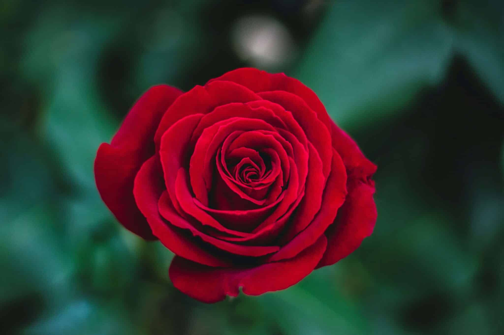
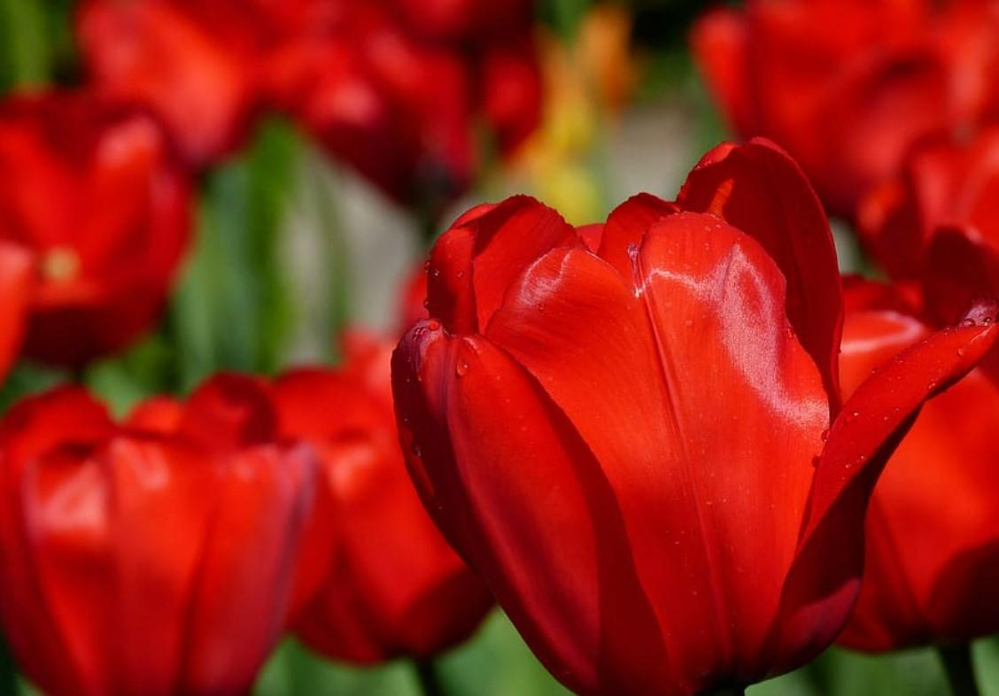
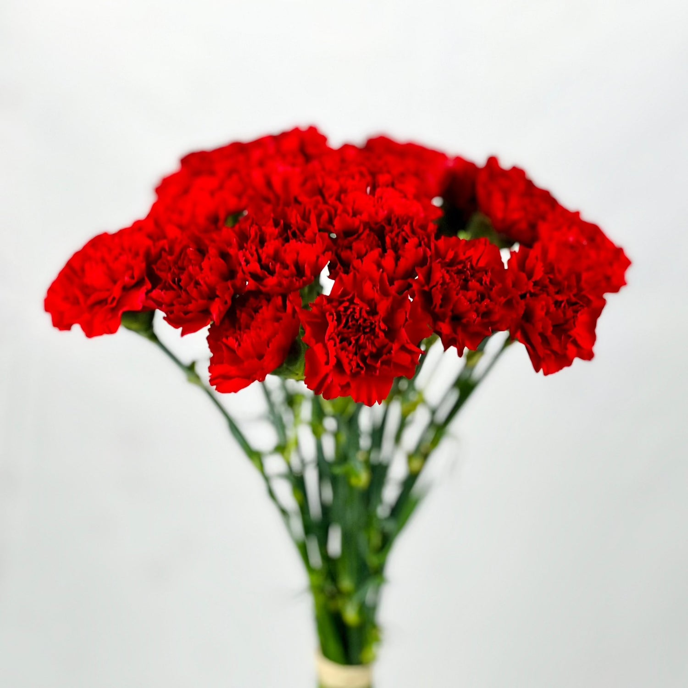
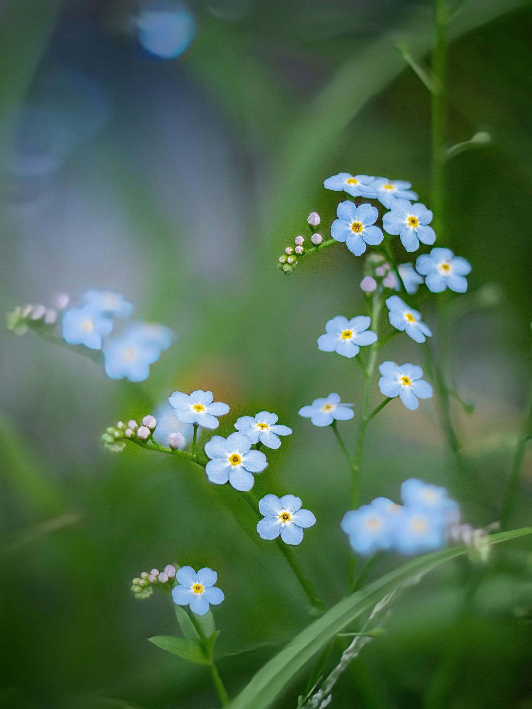
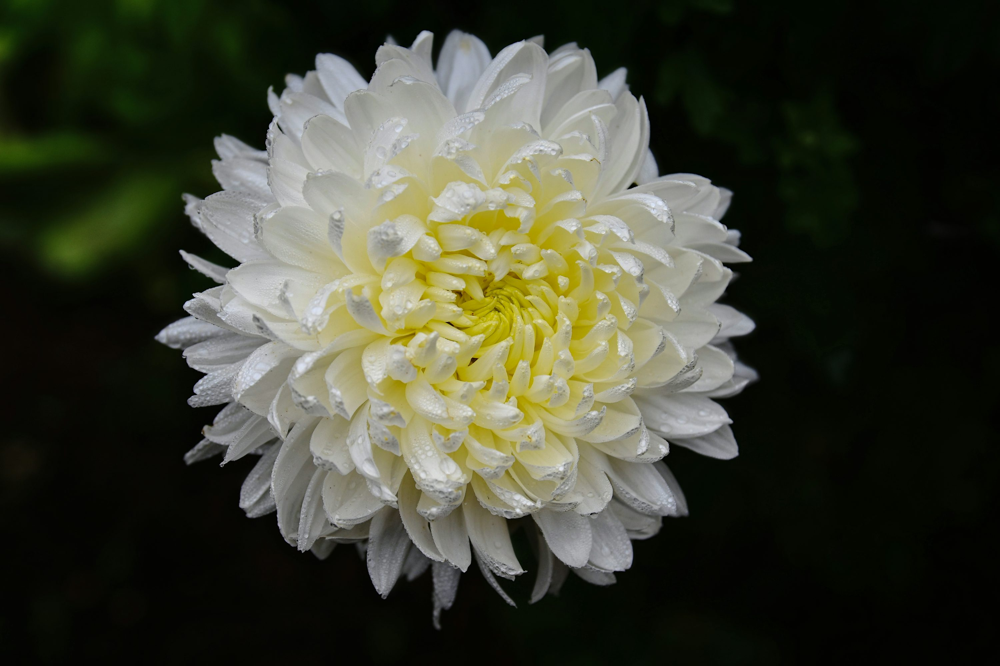
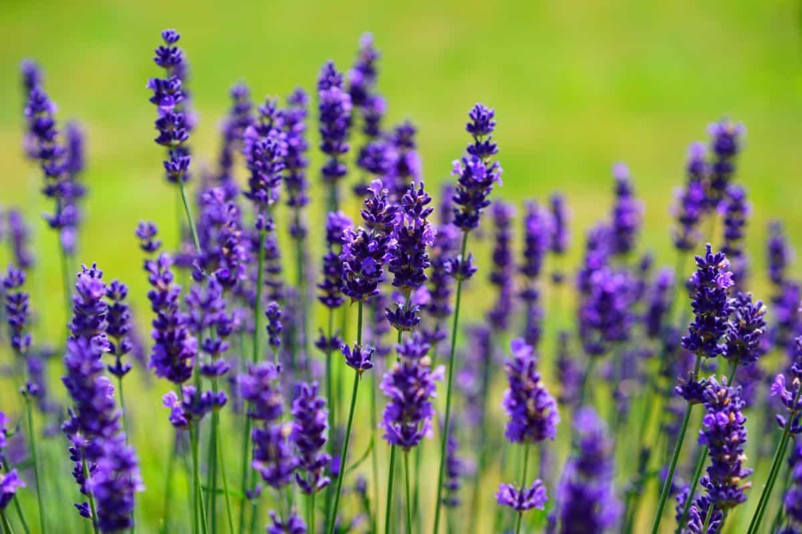
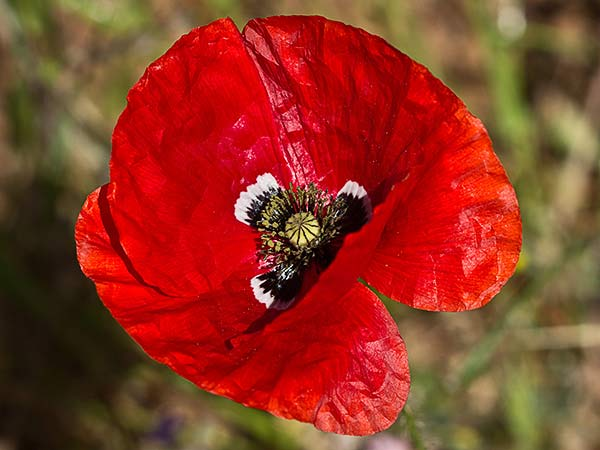
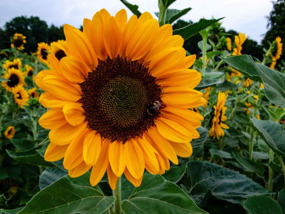
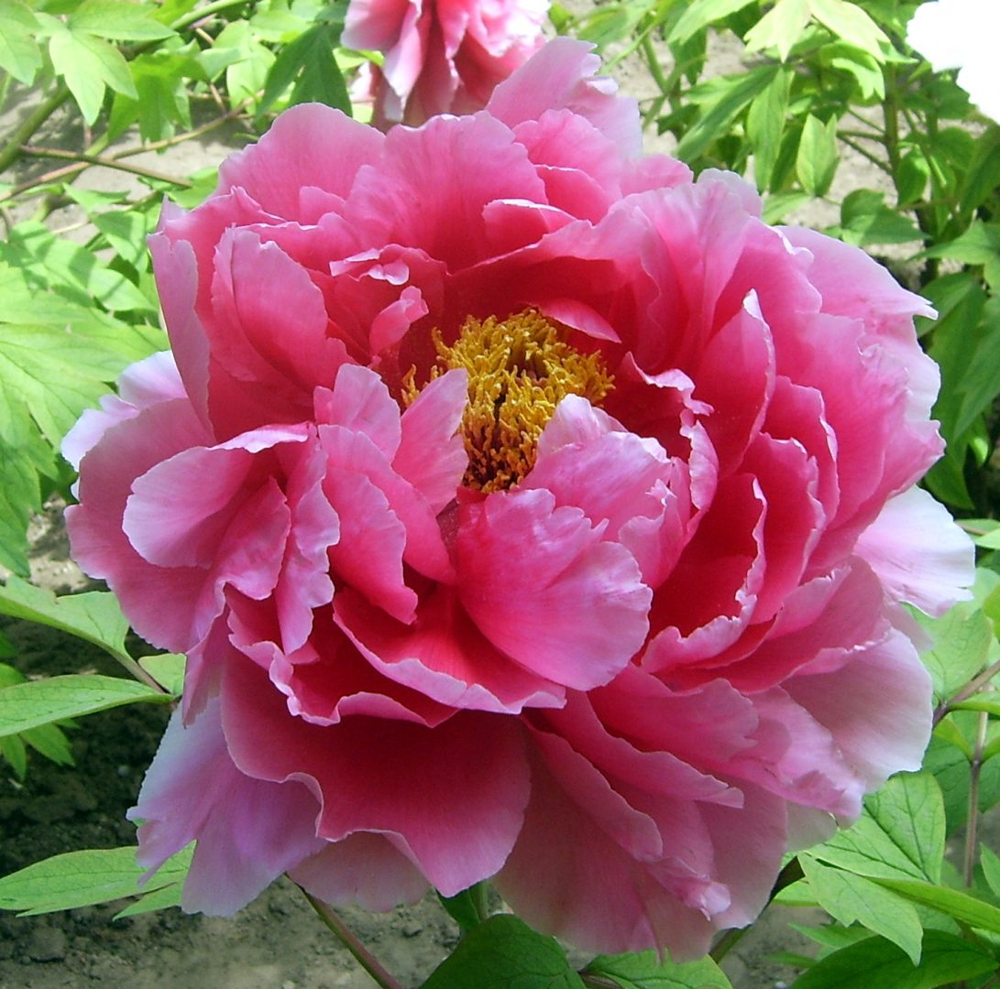

Rosa roja
El clásico símbolo del amor apasionado.
Explora flores según el sentimiento que transmiten

El clásico símbolo del amor apasionado.

Declaración de amor perfecta.

Amor vivo, admiración y fascinación.

Amor eterno, memoria y fidelidad eterna.

Representa el agradecimiento sincero.

Verdad, honestidad y dolor.

Calma y serenidad.

Consuelo, sueño y recuerdo.

Atrae la abundancia y la alegría.

Timidez, vergüenza o romance feliz y prosperidad.